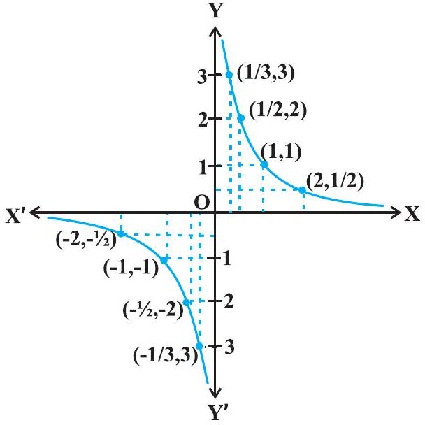
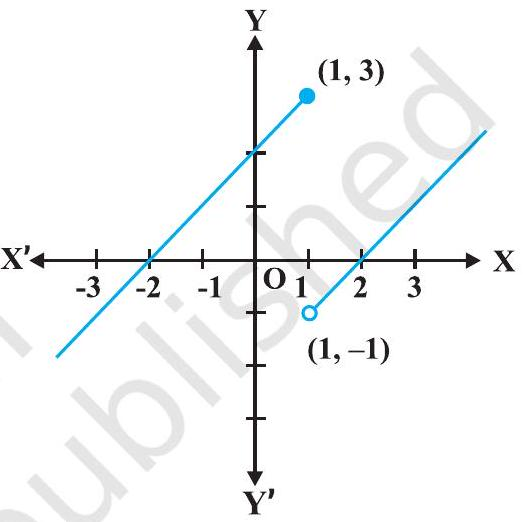
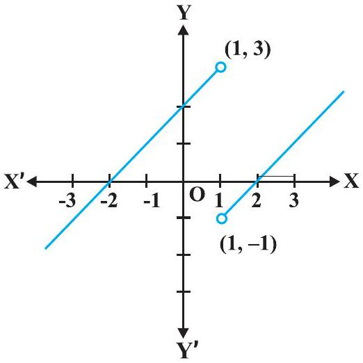
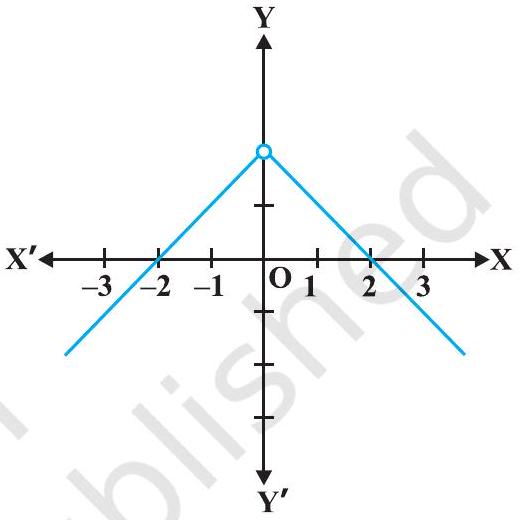
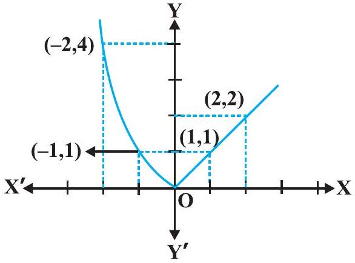
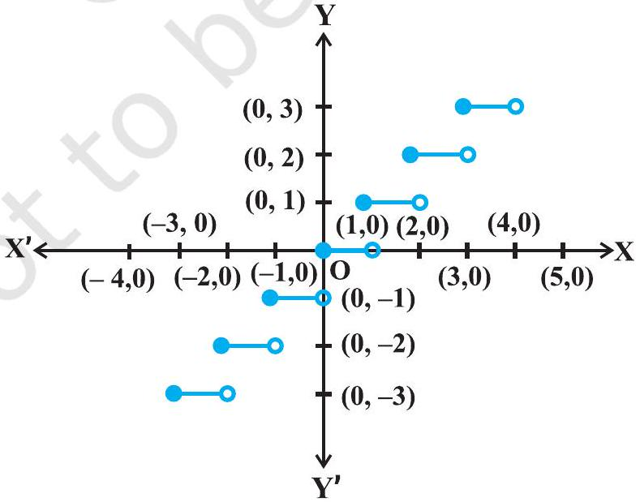
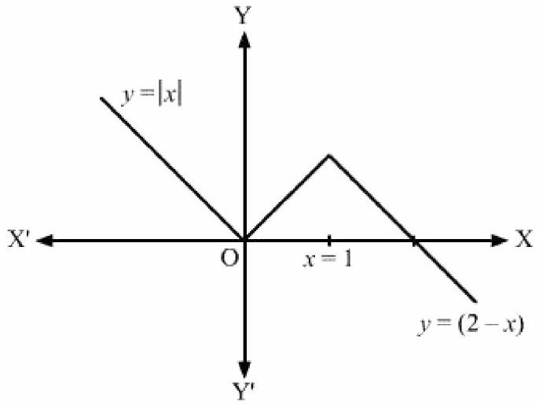

Check the continuity of the function f given by f(x) = 2 x+3 at x = 1.
Examine whether the function f given by f(x) = x2 is continuous at x = 0.
Discuss the continuity of the function f given by f(x) = |x| at x = 0.
Show that the function f given by
Check the points where the constant function f(x) = k is continuous.
Prove that the identity function on real numbers given by f(x) = x is continuous at every real number.
Is the function defined by f(x) = |x|, a continuous function?
Discuss the continuity of the function f given by f(x) = x3+x2-1.
Discuss the continuity of the function f defined by f(x)=1x, x ≠ 0.
| Table 5.1 | |||||||
| x | 1 | 0.3 | 0.2 | 0.1 = 10-1 | 0.01 = 10-2 | 0.001 = 10-3 | 10-n |
| f(x) | 1 | 3.333... | 5 | 10 | 100 = 102 | 1000 = 103 | 10n |
| Table 5.2 | |||||||
| x | -1 | -0.3 | -0.2 | -10-1 | -10-2 | -10-3 | -10-n |
| f(x) | -1 | - 3.333... | -5 | - 10 | -102 | -103 | -10n |

Discuss the continuity of the function f defined by

Find all the points of discontinuity of the function f defined by

Discuss the continuity of the function defined by

Discuss the continuity of the function f given by

Show that every polynomial function is continuous.
Find all the points of discontinuity of the greatest integer function defined by f(x) = [x], where [x] denotes the greatest integer less than or equal to x.

Prove that every rational function is continuous.
Discuss the continuity of sine function.
Prove that the function defined by f(x) = tan x is a continuous function.
Show that the function defined by f(x) = sin (x2) is a continuous function.
Show that the function f defined by
Find the derivative of the function given by f(x) = sin (x2).
Find d yd x if x-y = π.
Find d yd x, if y+sin y = cos x.
Find the derivative of f given by f(x) = sin-1 x assuming it exists.
| f(x) | sin-1 x | cos-1 x | tan-1 x |
| f1(x) | 1√(1-x2) | -1√(1-x2) | 11+x2 |
| Domain off | (-1, 1) | (-1, 1) | R |
Is it true that x = elog x for all real x ?
Differentiate the following w.r.t. x : (i) e-x (ii) sin (log x), x>0 (iii) cos-1(ex) (iv) ecos x
Differentiate √((x-3)(x2+4)3 x2+4 x+5) w.r.t. x.
Differentiate ax w.r.t. x, where a is a positive constant.
Differentiate xsin x, x>0 w.r.t. x.
Find d yd x, if yx+xy+xx = ab.
Find d yd x, if x = a cos θ, y = a sin θ.
Find d yd x, if x = a t2, y = 2 a t.
Find d yd x, if x = a(θ+sin θ), y = a(1-cos θ).
Find d yd x, if x23+y23 = a23.
Find d2 yd x2, if y = x3+tan x.
If y = A sin x+B cos x, then prove that d2 yd x2+y = 0.
If y = 3 e2 x+2 e3 x, prove that d2 yd x2-5 d yd x+6 y = 0.
If y = sin-1 x, show that (1-x2) d2 yd x2-x d yd x = 0.
Differentiate w.r.t. x, the following function: (i) √(3 x+2)+1√(2 x2+4) (ii) log 7(log x)
Differentiate the following w.r.t. x. (i) cos-1(sin x) (ii) tan-1(sin x1+cos x) (iii) sin-1(2x+11+4x)
Find f′(x) if f(x) = (sin x)sin x for all 0<x<π.
For a positive constant a find d yd x, where
Differentiate sin2 x w.r.t. ecos x.
Prove that the function f(x) = 5 x-3 is continuous at x = 0, at x = -3 and at x = 5.
Examine the continuity of the function f(x) = 2 x2-1 at x = 3.
Examine the following functions for continuity.
Part (a)
f(x) = x-5
Part (b)
f(x)=1x-5, x ≠ 5
Part (c)
f(x)=x2-25x+5, x ≠ -5
Part (d)
f(x) = |x-5|
Prove that the function f(x) = xn is continuous at x = n, where n is a positive integer.
Is the function f defined by
f(x) = {2 x+3, if x ≤ 22 x-3, if x>2
f(x) = {|x|+3, if x ≤ -3-2 x, if -3<x<36 x+2, if x ≥ 3
f(x) = {|x|x, if x ≠ 00, if x = 0
f(x) = {x|x|, if x<0-1, if x ≥ 0
f(x) = {x+1, if x ≥ 1x2+1, if x<1
f(x) = {x3-3, if x ≤ 2x2+1, if x>2
f(x) = {x10-1, if x ≤ 1x2, if x>1
Is the function defined by
f(x) = {3, if 0 ≤ x ≤ 14, if 1<x<35, if 3 ≤ x ≤ 10
f(x) = {2 x, if x<00, if 0 ≤ x ≤ 14 x, if x>1
f(x) = {-2, if x ≤ -12 x, if -1<x ≤ 12, if x>1
Find the relationship between a and b so that the function f defined by
For what value of λ is the function defined by
Show that the function defined by g(x) = x-[x] is discontinuous at all integral points. Here [x] denotes the greatest integer less than or equal to x.
Is the function defined by f(x) = x2-sin x+5 continuous at x = π ?
Discuss the continuity of the following functions:
Part (a)
f(x) = sin x+cos x
Part (b)
f(x) = sin x-cos x
Part (c)
f(x) = sin x · cos x
Discuss the continuity of the cosine, cosecant, secant and cotangent functions.
Find all points of discontinuity of f, where
Determine if f defined by
Examine the continuity of f, where f is defined by
f(x) = {k cos xπ-2 x, if x ≠ π23, if x=π2 at x=π2
f(x) = {k x2, if x ≤ 23, if x>2 at x = 2
f(x) = {k x+1, if x ≤ πcos x, if x>π at x = π
f(x) = {k x+1, if x ≤ 53 x-5, if x>5 at x = 5
Find the values of a and b such that the function defined by
Show that the function defined by f(x) = cos (x2) is a continuous function.
Show that the function defined by f(x) = |cos x| is a continuous function.
Examine that sin |x| is a continuous function.
Find all the points of discontinuity of f defined by f(x) = |x|-|x+1|.
sin (x2+5)
cos (sin x)
sin (a x+b)
sec (tan (√(x)))
sin (a x+b)cos (c x+d)
cos x3 · sin2(x5)
2 √(cot (x2))
cos (√(x))
Prove that the function f given by
Prove that the greatest integer function defined by
2 x+3 y = sin x
2 x+3 y = sin y
a x+b y2 = cos y
x y+y2 = tan x+y
x2+x y+y2 = 100
x3+x2 y+x y2+y3 = 81
sin2 y+cos x y = kappa
sin2 x+cos2 y = 1
y = sin-1(2 x1+x2)
y = tan-1(3 x-x31-3 x2),-1√(3)<x<1√(3)
y = cos-1(1-x21+x2), 0<x<1
y = sin-1(1-x21+x2), 0<x<1
y = cos-1(2 x1+x2),-1<x<1
y = sin-1(2 x √(1-x2)),-1√(2)<x<1√(2)
y = sec-1(12 x2-1), 0<x<1√(2)
exsin x
esin-1 x
ex3
sin (tan-1 e-x)
log (cos ex)
ex+ex2+…+ex5
√(e√(x)), x>0
log (log x), x>1
cos xlog x, x>0
cos (log x+ex), x>0
cos x · cos 2 x · cos 3 x
√((x-1)(x-2)(x-3)(x-4)(x-5))
(log x)cos x
xx-2sin x
(x+3)2 · (x+4)3 · (x+5)4
(x+1x)x+x(1+1x)
(log x)x+xlog x
(sin x)x+sin-1 √(x)
xsin x+(sin x)cos x
xx cos x+x2+1x2-1
(x cos x)x+(x sin x)1x
xy+yx = 1
yx = xy
(cos x)y = (cos y)x
x y = e(x-y)
Find the derivative of the function given by f(x) = (1+x)(1+x2)(1+x4)(1+x8) and hence find f′(1).
Differentiate (x2-5 x+8)(x3+7 x+9) in three ways mentioned below: (i) by using product rule (ii) by expanding the product to obtain a single polynomial. (iii) by logarithmic differentiation. Do they all give the same answer?
Part (i)
by using product rule
Part (ii)
by expanding the product to obtain a single polynomial.
Part (iii)
by logarithmic differentiation.
If u, v and w are functions of x, then show that
x = 2 a t2, y = a t4
x = a cos θ, y = b cos θ
x = sin t, y = cos 2 t
x = 4 t, y=4t
x = cos θ-cos 2 θ, y = sin θ-sin 2 θ
x = a(θ-sin θ), y = a(1+cos θ)
x=sin3 t√(cos 2 t), y=cos3 t√(cos 2 t)
x = a(cos t+log tan t2) y = a sin t
x = a sec θ, y = b tan θ
x = a(cos θ+θ sin θ), y = a(sin θ-θ cos θ)
If x=√(asin-1 t), y=√(acos-1 t), show that d yd x = -yx
x2+3 x+2
x20
x · cos x
log x
x3 log x
ex sin 5 x
e6 x cos 3 x
tan-1 x
log (log x)
sin (log x)
If y = 5 cos x-3 sin x, prove that d2 yd x2+y = 0
If y = cos-1 x, Find d2 yd x2 in terms of y alone.
If y = 3 cos (log x)+4 sin (log x), show that x2 y2+x y1+y = 0
If y = A em x+B en x, show that d2 yd x2-(m+n) d yd x+m n y = 0
If y = 500 e7 x+600 e-7 x, show that d2 yd x2 = 49 y
If ey(x+1) = 1, show that d2 yd x2 = (d yd x)2
If y = (tan-1 x)2, show that (x2+1)2 y2+2 x(x2+1) y1 = 2
(3 x2-9 x+5)9
sin3 x+cos6 x
(5 x)3 cos 2 x
sin-1(x √(x)), 0 ≤ x ≤ 1
cos-1 x2√(2 x+7),-2<x<2
cot-1[√(1+sin x)+√(1-sin x)√(1+sin x)-√(1-sin x)], 0<x<π2
(log x)log x, x>1
cos (a cos x+b sin x), for some constant a and b.
(sin x-cos x)(sin x-cos x), π4<x<3 π4
xx+xa+ax+aa, for some fixed a>0 and x>0
xx2-3+(x-3)x2, for x>3
Find d yd x, if y = 12(1-cos t), x = 10(t-sin t),-π2<t<π2
Find d yd x, if y = sin-1 x+sin-1 √(1-x2), 0<x<1
If x √(1+y)+y √(1+x) = 0, for , -1<x<1, prove that
If (x-a)2+(y-b)2 = c2, for some c>0, prove that
If cos y = x cos (a+y), with cos a ≠ ± 1, prove that d yd x=cos2(a+y)sin a.
If x = a(cos t+t sin t) and y = a(sin t-t cos t), find d2 yd x2.
If f(x) = |x|3, show that f′ ′(x) exists for all real x and find it.
Using the fact that sin (A+B) = sin A cos B+cos A sin B and the differentiation, obtain the sum formula for cosines.
Does there exist a function which is continuous everywhere but not differentiable at exactly two points? Justify your answer.

If y = f(x)g(x)h(x)lmnabc, prove that d yd x = f′(x)g′(x)h′(x)lmnabc
If y = ea cos-1 x,-1 ≤ x ≤ 1, show that (1-x2) d2 yd x2-x d yd x-a2 y = 0.